Self-introduction
Apply for Web designer
Created by Zhao Chang / @ChiaoGeek
Hello There
My name is Zhao Chang. I am a first year CS master student who just start my 2.5 years program here at USC.
Work experience Ⅰ
Before I came to USC, I was a software development engineer working at Chinese Academy of Sciences. My project is concerning about visual relevance analysis systems based on Python and JavaScript language.
Project overview
This project aims to provide comprehensive search and mining services for academic information. In this system, we focus on:
1.Building an academic knowledge base (AKB) for academic information;
2.Developing Information search system for AKB;
3.Developing the demonstration system of knowledge-based entity relations.
design DRAWING
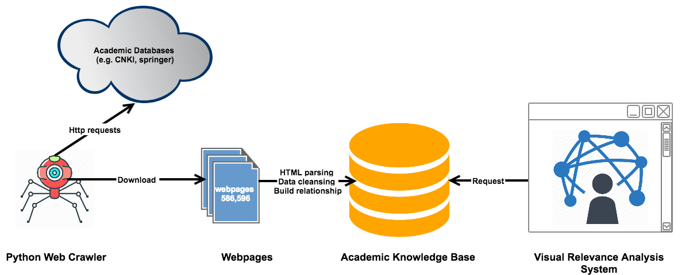
SYStem index

Crawling data monitoring
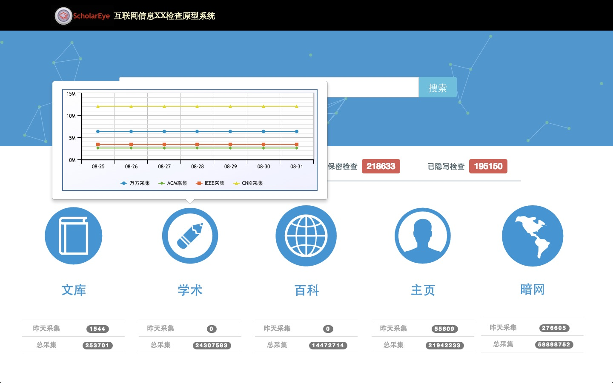searching result
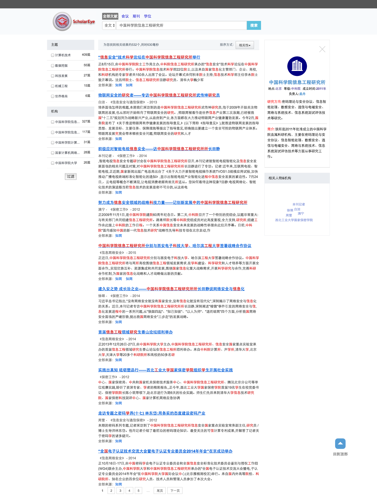Entity relationship display
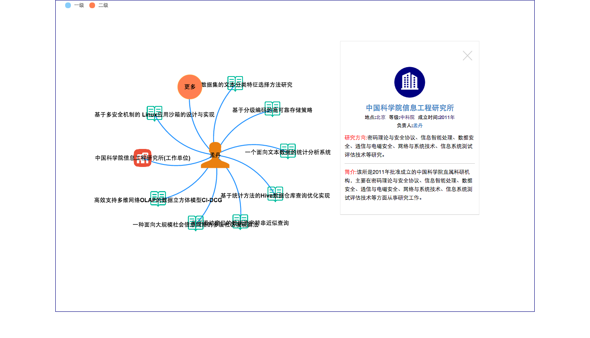system index
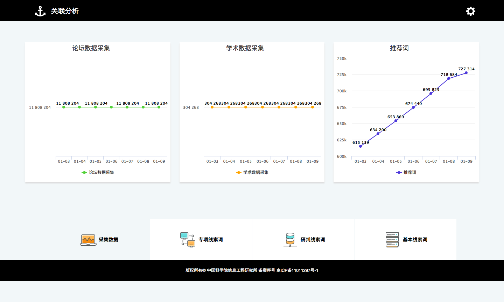Statistical interface
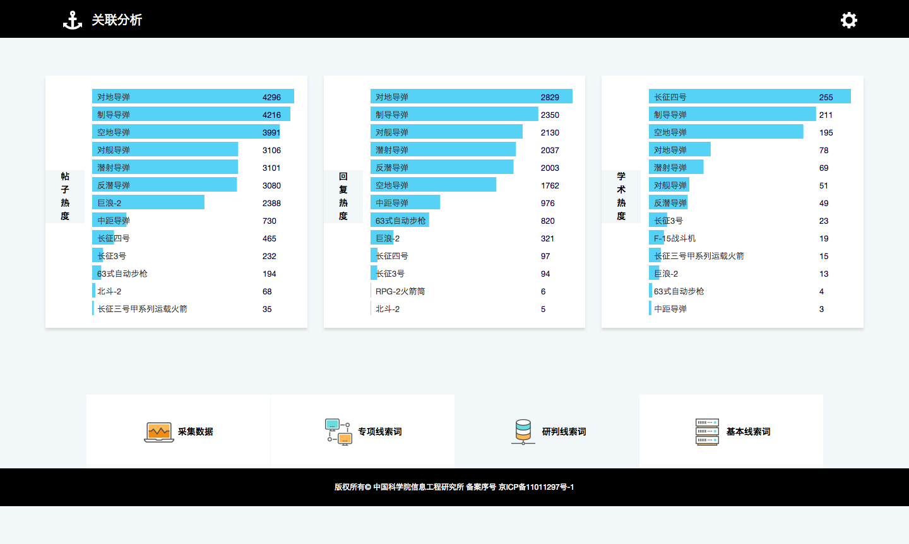Automatically discover keywords
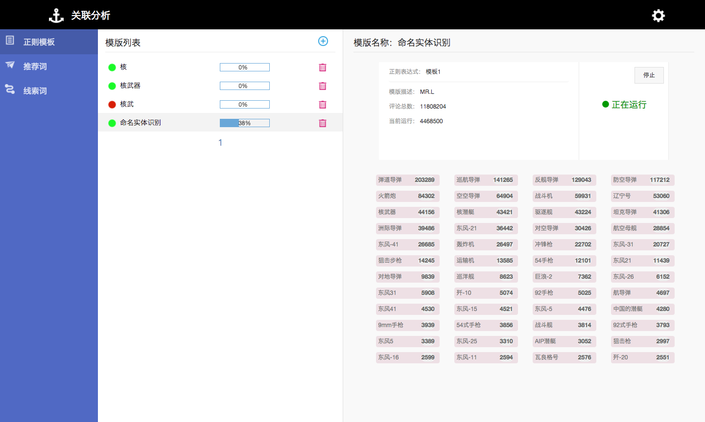Statistical interface
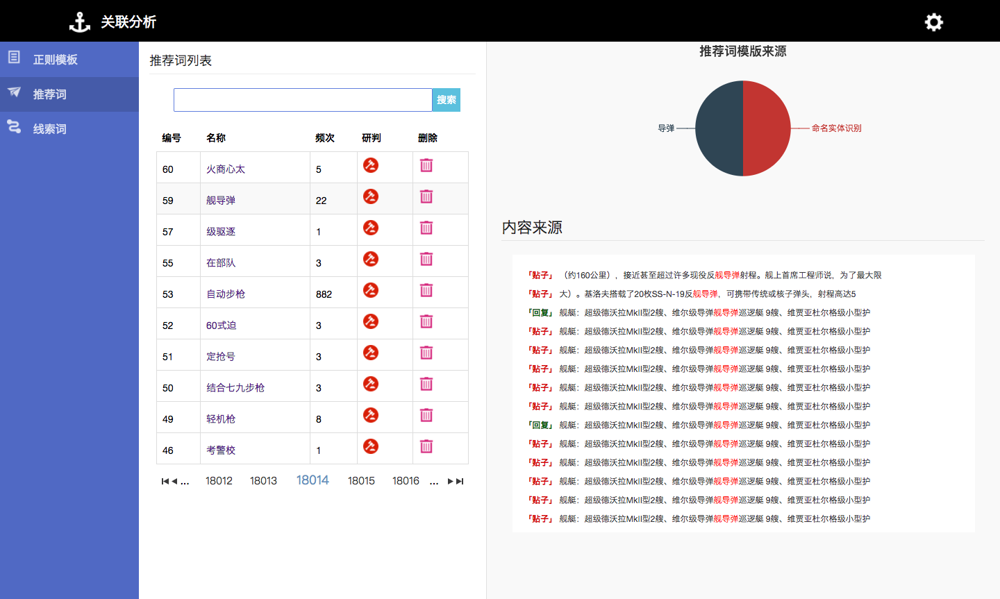enviroment and developmenmt language
server


enviroment and developmenmt language
client


 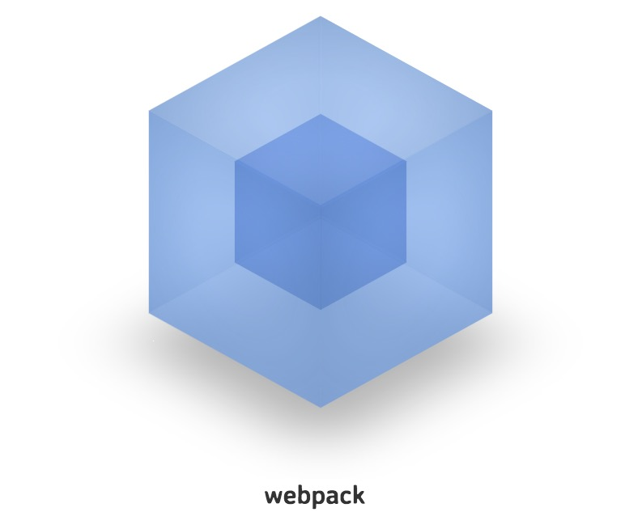
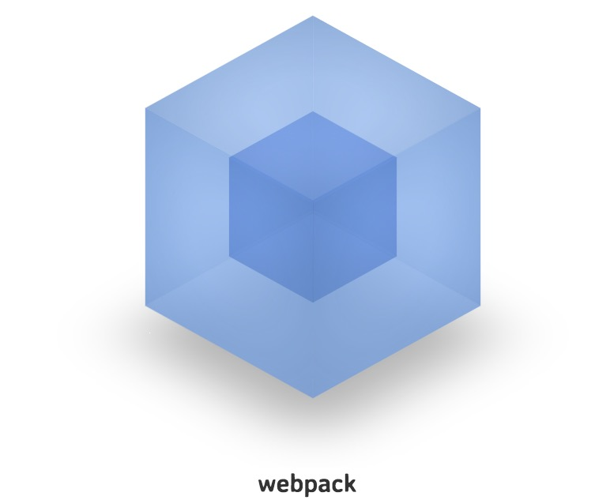
Work experience Ⅱ
When I was undergraduate student, I did a part-time jod at Student Enrollment and Employment Office. Meantime, I developed various types of softwares.
The Student Employment Information Website of my university
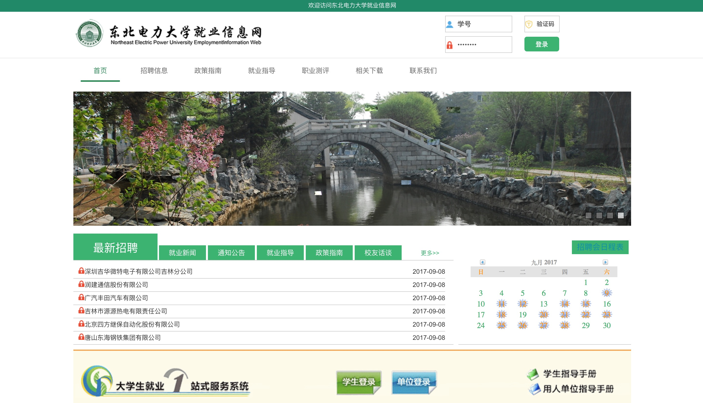
the Admission Information Website of my university
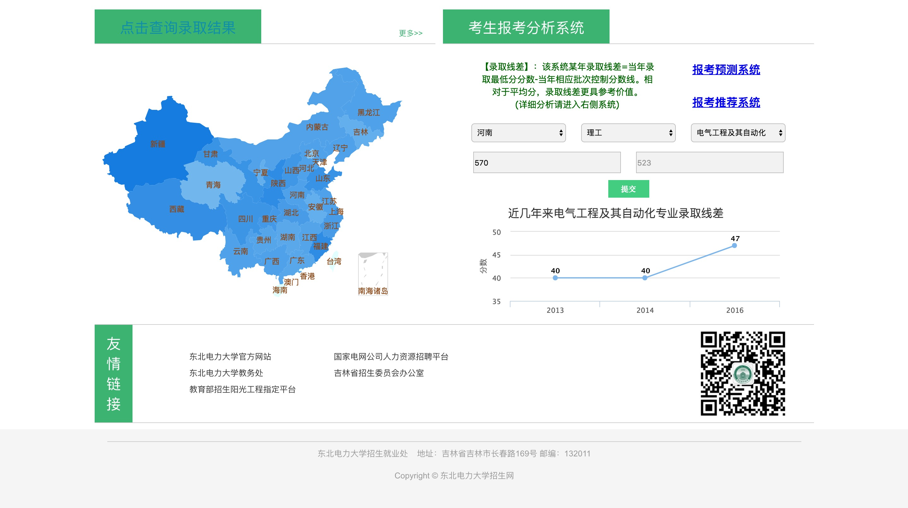
the Analysis and Speculation System of College Entrance Examination of my university
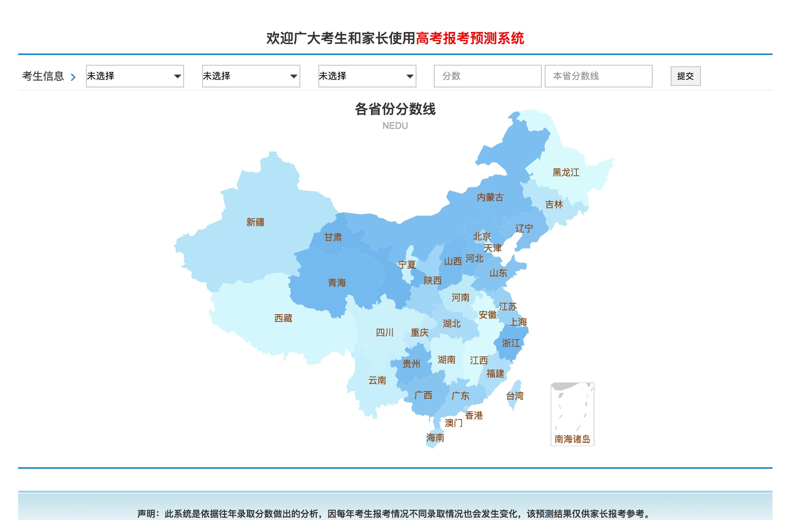
the official website of propaganda department of my university
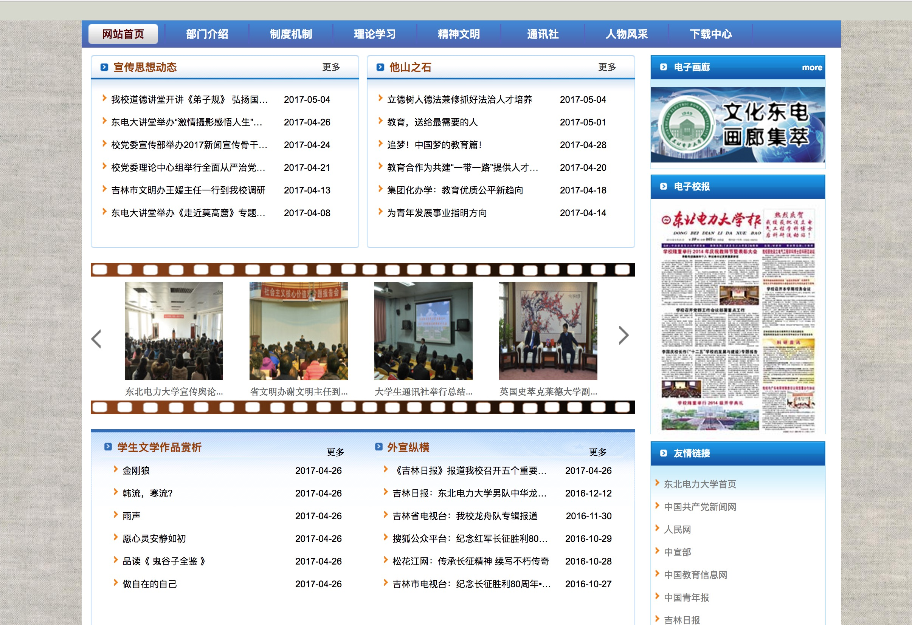
Project experience
Design of Monitoring and Control System for Interconnection of Mobile Device and the Household Appliance .
Project overview
The intelligent system used to remotely control household appliance via a mobile terminal, such as smart phone, iPad, and laptop. This system is based on Raspberry Pi and uses WeChat as the control platform. Users can monitor and control their household appliances by using this system no matter where they are.
System requirements
- Hardware requirements
- Raspberry Pi
- 32GB SD card
- power adapter
- Wi-Fi adapter for Raspberry Pi
- web server with public Ip address
- jumper wires
- power strip
System requirements
- Software requirements
- Raspbian(a Debian-based computer operating system for Raspberry Pi)
- Python
- RPI.GPIO(a python module to control Raspberry Pi GPIO channels)
Initial design DRAWING
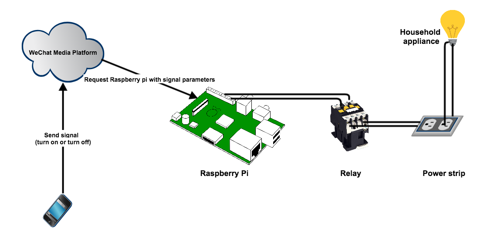
Redesigning DRAWING

my skills
Language: PHP, Python, SQL, JSON, SVG, C
Web Development: HTML/CSS/JS, JQuery, SQL, Bootstrap, Nodejs, VueJS, ReactJS, D3
Tools: Octave, Git, Vim, ElasticSearch
Relevant Coursework: Object-oriented Programming(95%), Database Principle and Application(97%),College Computer Basis(90%), C Language Programming(96%)
THE END
Thank you